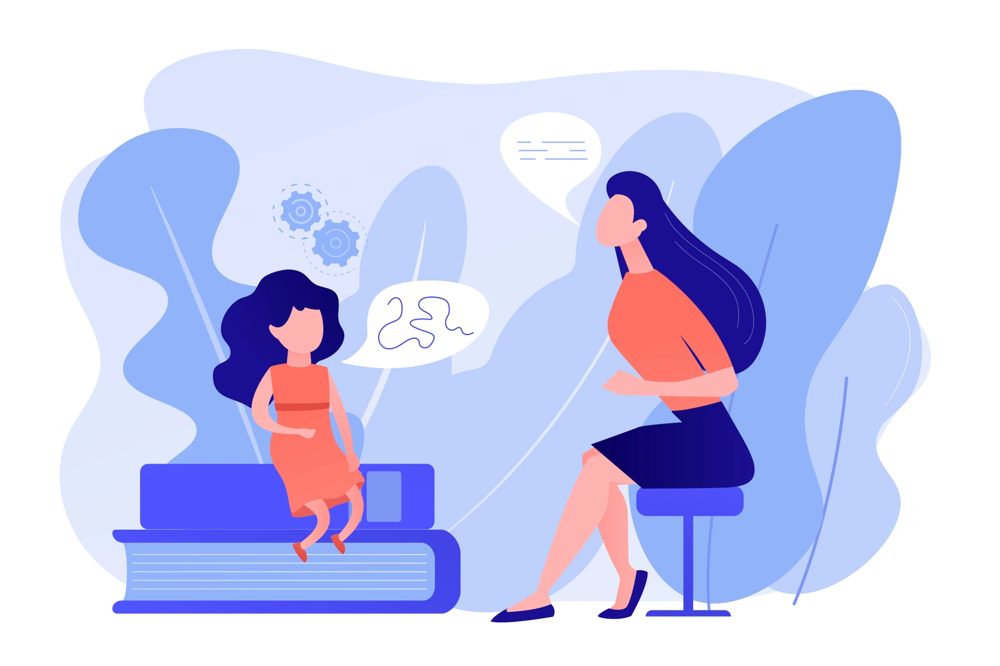

o mnie

Kim jestem?
Jestem psychologiem i psychoterapeutką pracującą w nurcie psychodynamicznym, który zakłada wpływ nieświadomych mechanizmów działania na życie człowieka. Specjalizuję się w prowadzeniu psychoterapii indywidualnej osób dorosłych i młodzieży w obszarze trudności emocjonalnych, depresji, lęków, zaburzeń nerwicowych, zaburzeń zachowania i zaburzeń osobowości. Pomagam pacjentom z problemami wynikającymi z kryzysów rozwojowych i adaptacyjnych.
Wykształcenie
Wiedzę i doświadczenie zdobywałam podczas studiów psychologicznych ukończonych na Uniwersytecie Wrocławskim. Obecnie jestem w trakcie procesu certyfikacji w Szkole Psychoterapii w Krakowskim Centrum Psychodynamicznym, rekomendowanym przez Polskie Towarzystwo Psychologiczne. Ukończyłam także Studium Socjoterapii i Psychoterapii Młodzieży..
Doświadczenie
W przeszłości byłam związana z Centrum Psychoterapii Consilia i Centrum Psyche a także Ośrodkiem Profilaktyki Środowiskowej Fundacji "Praesterno", gdzie prowadziłam socjoterapię, konsultacje psychologiczne, psychoterapię młodzieży i osób dorosłych. Obecnie prowadzę psychoterapię oraz konsultacje w gabinecie prywatnym. Współpracuję również z innymi specjalistami z zakresu psychoterapii, terapii rodzin oraz psychiatrii. Kompetencje zawodowe rozwijam uczestnicząc w szkoleniach i konferencjach naukowych a swoją pracę poddaję regularnej superwizji. Jestem również członkiem Polskiego Towarzystwa Psychoterapii Psychodynamicznej.
Terapia osób dorosłych

Terapia młodzieży
W czym mogę Ci pomóc?
zakres pomocy
Psychoterapia jest procesem służącym zmianie wewnętrznej, a także prowadzącym do podniesienia jakości życia. Pozwala uważnie przyjrzeć się sobie i swoim problemom, oraz odnaleźć dla nich rozwiązania. Jest to proces czasami powolny i długotrwały, który zmierza do trwałej poprawy w funkcjonowaniu oraz zmianie jakości życia.
Obszary w których możesz zmagać się z trudnościami:
obszar relacji
nadmierna powściągliwość w kontaktach z innymi, trudność w budowaniu i utrzymaniu trwałych relacji bliskich i intymnych, niestabilne i burzliwie przebiegające związki
obszar emocji
drażliwość, częste wybuchy złości, utrzymujące się poczucie gniewu, nadmierne okazywanie emocji, stany obniżonego nastroju
obszar zawodowy
łamanie zasad zachowań w pracy, trudność w utrzymaniu pracy w dłuższej perspektywie czasu, brak czerpania satysfakcji z wykonywanych obowiązków
obszar zachowań
działania autodestrukcyjne, impulsywność stwarzająca potencjalne zagrożenie np. w sferze seksualnej czy związanej z wydatkami